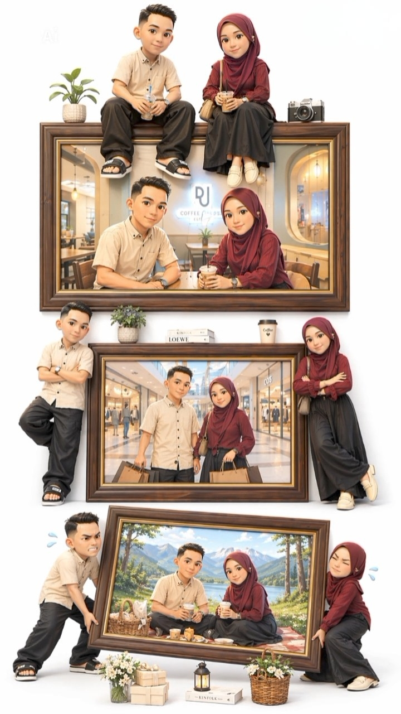
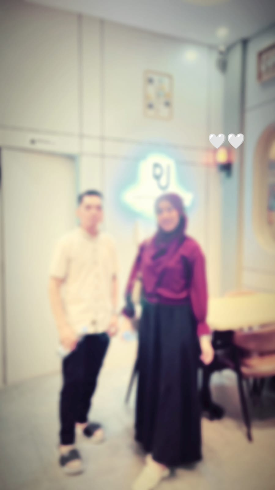
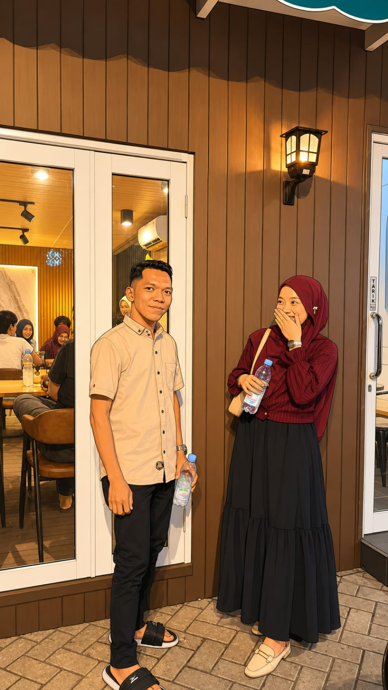
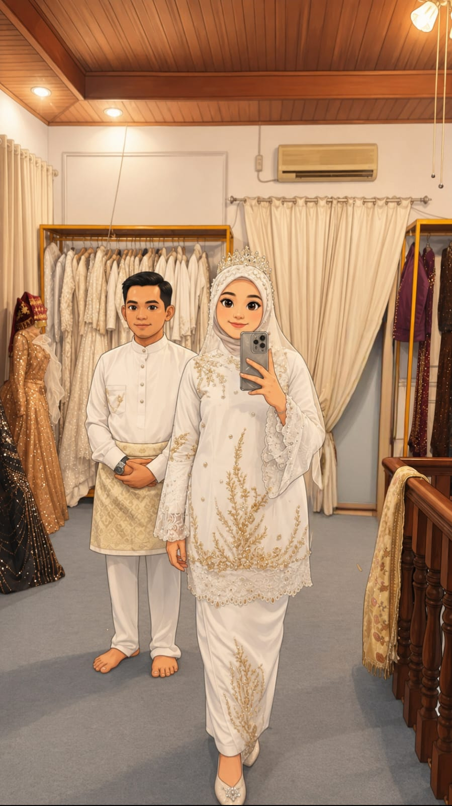

Save The Date
وَمِنْ اٰيٰتِهٖٓ اَنْ خَلَقَ لَكُمْ مِّنْ اَنْفُسِكُمْ اَزْوَاجًا لِّتَسْكُنُوْٓا اِلَيْهَا وَجَعَلَ بَيْنَكُمْ مَّوَدَّةً وَّرَحْمَةًۗ اِنَّ فِيْ ذٰلِكَ لَاٰيٰتٍ لِّقَوْمٍ يَّتَفَكَّرُوْنَ
Dan di antara tanda-tanda kekuasaan-Nya ialah Dia menciptakan untukmu istri-istri dari jenismu sendiri, supaya kamu cenderung dan merasa tenteram kepadanya.
- Ar-Rum . Ayat 21 -
(Siti)
Putri dari Bapak Khaidir & Ibu Rofikoh
(Agus)
Putra dari Bapak Aspan Siagian & Ibu Masdawiyah
Waktu & Tempat
AKAD NIKAH
Hari/Tanggal: Ahad, 16 Agustus 2026
(3 Rabi'ul Awal 1448 H)
Waktu: 10:00 WIB s/d Selesai
Tempat: Masjid Jami' Habibullah
Jl. Karya IV Perumahan Panorama Siak Hulu Blok F+, Tanah Merah, Kampar, Riau
RESEPSI PERNIKAHAN
Hari/Tanggal: Ahad, 16 Agustus 2026
(3 Rabi'ul Awal 1448 H)
Waktu: 13:00 WIB s/d Selesai
Tempat: Kediaman Mempelai Wanita
Perumahan Panorama Siak Hulu Blok B No. 13, RT 002 RW 010, Tanah Merah, Kampar, Riau
HITUNG MUNDUR HARI
Our Love Story
Rangkaian takdir indah menyatukan dua hati
Tidak ada yang terjadi secara kebetulan. Allah mempertemukan kami pada April 2026, melalui sebuah perkenalan yang sederhana namun membawa harapan akan sebuah perjalanan yang indah.
Dengan memohon petunjuk dan ridha-Nya, kedua keluarga dipertemukan pada Juni 2026 sebagai langkah menuju ikatan yang lebih bermakna.
InsyaAllah, pada 16 Agustus 2026, kami akan menyempurnakan separuh agama dengan mengikat janji suci pernikahan. Semoga Allah senantiasa melimpahkan keberkahan, sakinah, mawaddah, wa rahmah dalam setiap langkah kehidupan kami.
TURUT MENGUNDANG:
Seluruh Keluarga Besar Kedua Mempelai
Galeri







Wedding Gift
Doa restu Bapak/Ibu/Saudara/i merupakan hadiah terbaik bagi kami. Tetapi jika memberi merupakan tanda kasih, kami dengan senang hati menerimanya. Semoga kebaikan, keberkahan dan kesehatan selalu diberikan kepada kita semua.
Aamiin...
8135637234
a.n. AGUS SYAHRI
1932283708
a.n. SITI ROHIMAH